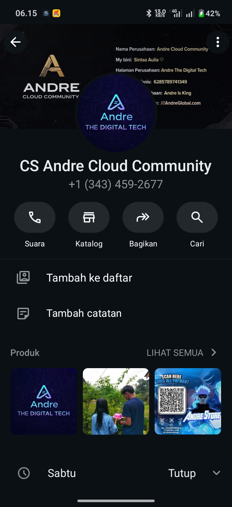
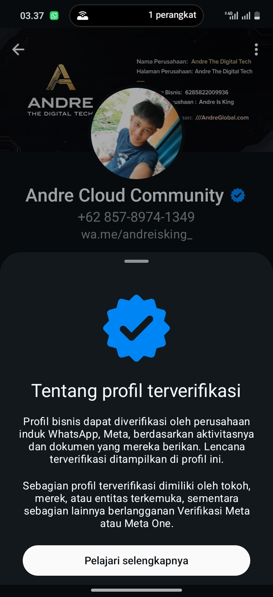
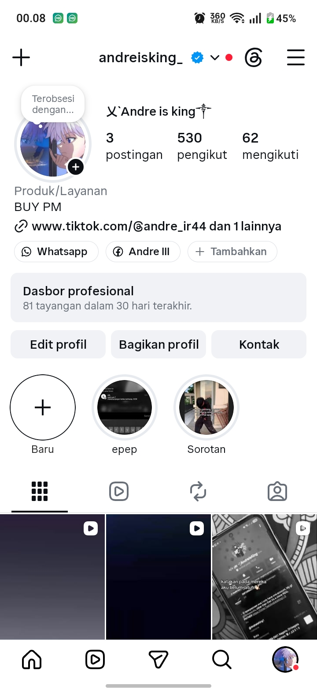
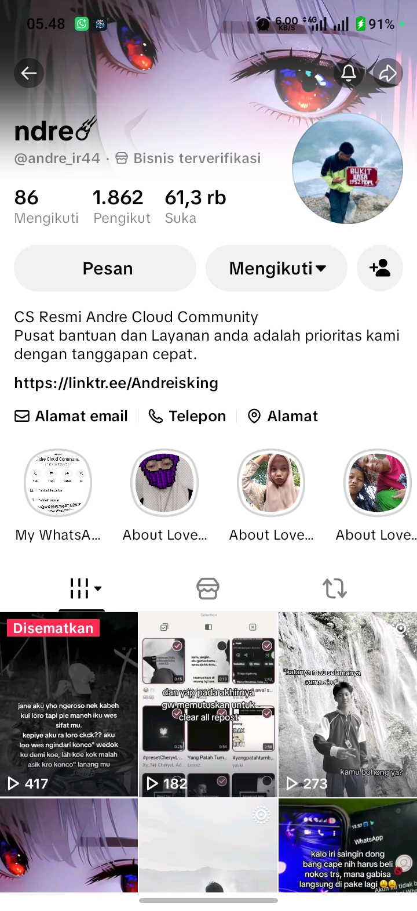
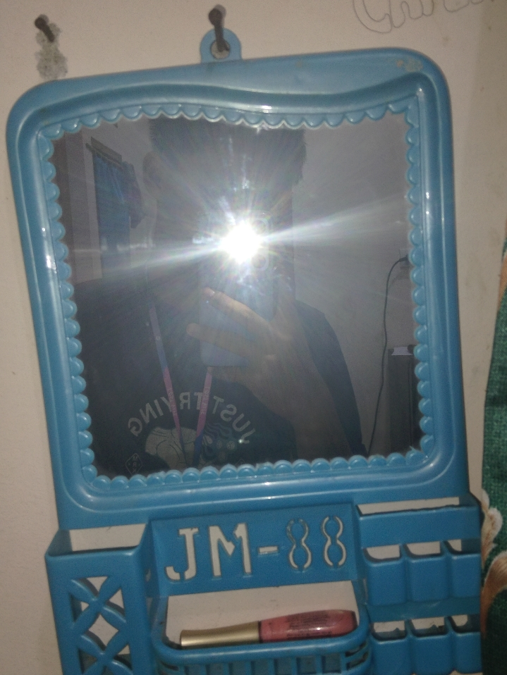
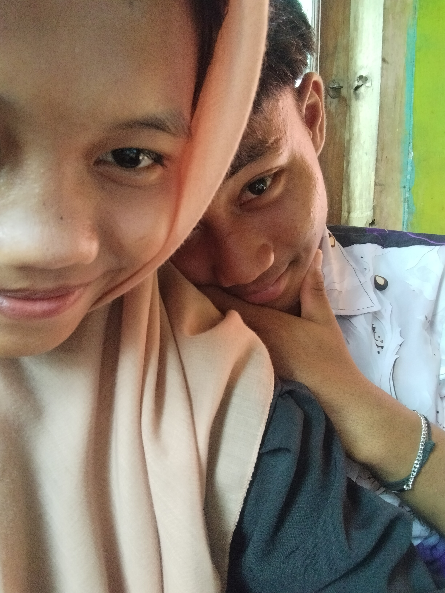

S` ANDRE IRFANTO
CS Resmi Cloud Community
Perkenalkan nama S` Andre Irfanto. Saya adalah seseorang yang memiliki ketertarikan besar terhadap teknologi, khususnya di bidang Cyber Security, keamanan WhatsApp, Verifikasi Bisnis, centang biru Sosial Media dan Centang biru akun WhatsApp dengan verifikasi meta dan agent Ai. saya masih dalam tahap belajar dan akan terus mengembangkan pengetahuan serta kemampuan dalam memahami keamanan sistem dan jaringan
Saya juga mulai mengenal proses identifikasi dan pelaporan kerentanan keamanan. Meskipun masih memiliki banyak hal untuk dipelajari, saya memiliki semangat untuk terus berkembang, menambah pengalaman, dan memperdalam pemahaman di bidang Cyber Security.
Minat dan Fokus Pembelajaran :
- Cyber Security
- Web Security
- Ethical Hacking
- Verifikasi Sosial media
- Verifikasi WhatsApp Businnes
- WhatsApp bisnis Centang Biru





